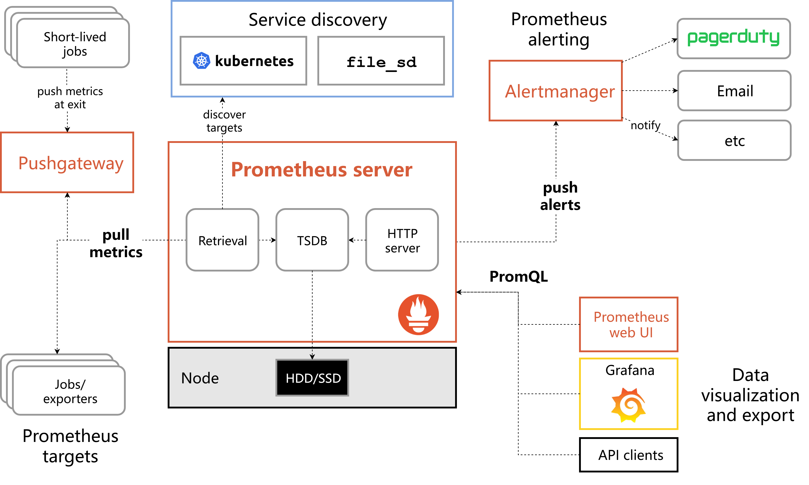

OSS PROJECT INTRO · PROMETHEUS 系列第 1 期：认识项目
开源项目入门系列的每个新项目，都从三个问题开始：它解决什么痛点、凭什么活下来、什么场景该选它。上一个项目我们聊完了 Elasticsearch，今天开启新项目 Prometheus——你在公司的监控大屏里、Kubernetes 集群的告警链路里、Grafana 的数据源列表里见过它的名字。官方定义一句话：an open-source systems monitoring and alerting toolkit，一套开源的系统监控与告警工具集，把"什么时候坏、坏了多久、影响谁"变成一次曲线查询。本期不装任何软件，素材全部来自官方文档与官方仓库，每张图都标出处；你带走四样东西：故障三连问的痛点、指标时序"采集-存储-查询一体机"这个心智模型、拉取式采集反直觉却是对的原理，外加一份五方选型对比。
每个生产系统都绕不开故障三连问：什么时候坏的？坏了多久？影响了谁？微服务架构把这三个问题变得格外难——调用链一长，一台机器的问题沿着依赖扩散成一片 symptoms。没上监控系统前，大家的应答方式是人工翻日志，很快撞上三堵墙：
指标监控换了一条思路：预先定义好数值型指标（请求数、延迟、错误率、资源占用），由监控系统按固定节奏持续采集，存成时间序列。故障发生时先看曲线——什么时候开始涨、涨了多久、哪些指标一起动——再下钻日志找根因。回答三连问从"翻箱倒柜"变成"一次查询"。2012 年，SoundCloud 的工程师为微服务监控写下这个项目，后来它长成了云原生时代监控的事实标准。
官方文档的定义值得逐词读（prometheus.io《Overview》，2026-09 核对）："Prometheus is an open-source systems monitoring and alerting toolkit."——一套开源的系统监控与告警工具集。同页的特性清单列了五件事：多维数据模型（指标名 + 标签集定位一条时间序列）、专用查询语言 PromQL、单机自治不依赖分布式存储、基于 HTTP 的拉取式（Pull）采集、服务发现自动找目标。一句话心智模型：时序数据的"采集-存储-查询"一体机。
先看指标长什么样。被监控端在 HTTP 端点把指标以文本形式摊开，样例出自官方《Exposition formats》文档：
# HELP http_requests_total The total number of HTTP requests.
# TYPE http_requests_total counter
http_requests_total{method="post",code="200"} 1027
http_requests_total{method="post",code="400"} 3注意形状：指标名 + 标签集才是这条序列的完整身份。同一个 http_requests_total，靠 method 与 code 两枚标签分出多条序列——这就是官方说的多维数据模型，标签是查得动的筛子。查询语言 PromQL 把这个优势用足：先选指标名，再用花括号挑标签，配合 rate、sum by 等函数做速率与聚合，"看一眼错误率曲线"就是一行表达式的事。
把"一体机"的运行方式走一遍：服务发现自动找出要抓的目标，采集器按固定节奏（默认每 15 秒）上门拉数据，存进本机时序数据库 TSDB；查询侧 Grafana 面板与脚本通过 PromQL 取数；规则评估跑在同一份数据上，触发的告警交给独立部署的 Alertmanager 去重、分组、路由。三个关键词——多维数据模型、PromQL、拉取式采集——是理解它所有设计的根。
直觉上，监控数据在被监控端，应该由它主动上报（Push）——推过来不就完了？Prometheus 偏偏选了拉取（Pull）：监控端按固定节奏上门抓。这个选择反直觉，但放到监控场景里逐条看就通了。官方 FAQ 给了三条拉取的优势（prometheus.io《FAQ》，2026-09 核对）：可以按需多起几个监控实例（比如开发时在自己笔记本上）；更简单、更可靠地判断目标是否宕机；可以随时用浏览器手动访问目标看健康状态。落到设计上有三份红利：
up 指标——官方文档《Jobs and instances》的定义是"实例可达为 1，抓取失败为 0"。被监控端挂没挂，监控端自己最清楚，不依赖对方"临死前发遗言"；Pull 的短板同样明摆着：目标躲在 NAT/防火墙后，或生命周期短于抓取间隔的批处理任务，监控端根本没机会上门。官方给的折中是 Pushgateway：短任务退出前把指标推上去，再由 Prometheus 统一拉取。官方 FAQ 的结论很克制："我们认为拉取略好，但它不应成为选型监控系统时的主要考量"——真正的取舍在生态与数据模型。
官方架构原图（prometheus.io《Overview》附图，2026-09 截取）把分工画得清清楚楚：主服务内含抓取（Retrieval）、时序存储（TSDB）与 HTTP 服务三件套；服务发现在上方；左侧是被监控目标，短任务经 Pushgateway 折中；右上 Alertmanager 独立部署——它挂了也不影响采集存储；右下 Grafana 与各类 API 客户端走同一条 PromQL 查询通道。

社区面上（2026-09-19 核对）：prometheus/prometheus 仓库 Star 66.1k、Fork 10.8k，Go 编写，About 自述"The Prometheus monitoring system and time series database"，Apache-2.0 许可；累计 379 个发布版本。治理面：2016-05-09 被 CNCF 收纳为第二个托管项目（官方文档自述，排在 Kubernetes 之后），2018-08-09 达到毕业标准（CNCF 项目页核对）。采用面：Docker Hub 官方 prom/prometheus 镜像累计拉取 20.1 亿次（Docker Hub API 当日查询）。注意采用数据为平台口径，选型前拿自己的负载实测。
| 版本线 | 当前（2026-09） | 定位 |
|---|---|---|
| 3.14（当前稳定） | 3.14.0（2026-08-17，GitHub Latest） | 本系列基准 |
| 3.13 | 3.13.3（2026-09-07 补丁） | 并行维护的稳定线，收安全与时序库修复 |
| 3.15 | 3.15.0-rc.0（2026-09-09） | 下一版预发布 |
| 3.0 | 2024-11-14 发布 | 六年磨一剑的大版本，当前 3.x 时代的起点 |
数据来源：GitHub 仓库页与 Releases（3.14.0 标记 Latest，2026-08-17 发布，UTC）、prometheus.cncf.io 项目页、Docker Hub API，均为 2026-09-19 核对。3.x 时代多线并行维护，生产环境跟紧所在版本的补丁线。
一个公司内部工具，走完"开源 → 基金会中立托管 → 毕业"的全流程，这条路径本身就是开源项目的教科书。而它长成的位置——云原生监控事实标准——也决定了第二期的安装、第三期的服务发现，都会和 Kubernetes 缠绕在一起讲。
监控这条赛道上的玩家各有立场（数据为各仓库/官网公开口径，2026-09-19 核对）：
| 方案 | 定位与技术路线 | 数据模型 | 成本与自主性 | 热度（2026-09） |
|---|---|---|---|---|
| Prometheus 3.14 | 指标监控告警一体机：采集、存储、查询、规则告警一件套 | 多维（指标名 + 标签集）+ PromQL | 开源自建，Apache-2.0，只付机器成本 | 66.1k Stars |
| Zabbix | 老牌企业级监控，Agent 上报为主 + 监控模板生态全，网络设备 SNMP 友好 | 主机 + 监控项，维度弱 | 开源自建，传统机房存量巨大 | 老将，企业存量高 |
| InfluxDB / OpenTSDB | 纯时序数据库：只管存储与查询，采集/告警/面板要自己拼装 | measurement + tag | 开源自建，组件拼装人力成本高 | 与 Prometheus 同场竞技的存储路线 |
| Datadog（SaaS） | 托管可观测全家桶，开箱即用，集成度最高 | 多维，产品化封装 | 按主机计费，规模上去成本陡增；数据在第三方 | SaaS 市场头部 |
| 云厂商监控 | CloudWatch / 阿里云监控等，云内资源零配置接入 | 各云自有模型 | 与云绑定，跨云与自建机房覆盖弱 | 上云企业默认项 |
怎么选？云原生业务、要指标-告警-面板全链路且数据自主，Prometheus 是默认答案；传统机房与网络设备为主的存量环境，Zabbix 依然称职；只差一个时序存储、采集告警自有体系，InfluxDB/OpenTSDB 是零件；不想养运维、要开箱即用，Datadog 花钱买省心；全部业务在一家云上，云监控零成本起步。没有全能冠军，只有场景匹配。
✅ 适合：
❌ 错配：
一条判断捷径：问"现在/过去一段时间系统表现如何"的数值型问题，找 Prometheus；问"某次请求经历了什么"的明细型问题，去日志与链路系统。指标驱动自动化（比如按负载扩缩容）与它也天然互补，每日微课程线已有一期从消费端视角展开，见文末延伸阅读。
延伸阅读（每日微课程线）：
每题点击选项立即反馈 · 共 4 题
1. 官方给 Prometheus 的定位，哪句最准确？
2. 为什么说 Pull（拉取）比 Push（上报）更适合判断目标存活？
3. 官方明确说 Prometheus 不适合哪类场景？
4. 以下哪个需求，最不该选 Prometheus？
先把两边的真实约束摆出来。Push 的直觉来自数据所有权：数据在被监控端，推过来顺理成章。但监控场景有三个特性把天平压向 Pull。第一，"取不到"和"收不到"含义不同：Pull 模式下监控端主动上门，取不到数据只有一种解释——目标或链路出了问题（up 归零）；Push 模式下收不到数据有两种解释——目标挂了，或网络抖了、对方还没来得及推。把"存活判断"从被监控端的"临死遗言"手里收回来，是可用性监测的地基。第二，拓扑发现权：微服务环境实例生灭是常态，Pull 配服务发现，新实例自动进抓取名单；Push 则要求每个实例被告知"往哪推"，配置漂移是常年 bug 源。第三，反压能力：抓取节奏由监控端统一控制，数百目标同时故障不会演变成"全员重试上报"的二次灾害；Push 系统要专门设计退避与丢弃策略才扛得住。那 NAT 后与短任务怎么办？Prometheus 的答案是承认 Pull 的边界并给出两个折中：Pushgateway 供短任务退出前推送、监控端再统一拉取；黑盒探测（blackbox exporter）从监控端主动发起探测。注意这两个折中都没有让被监控端变成常态化的数据推送方——Pull 的骨架没变。官方 FAQ 的态度也值得学：承认权衡（"拉取略好"），但提醒别把它当选型的主要依据——生态、数据模型与查询能力才是。
先把"不精确"的来源拆成三层。第一层，采样间隔：默认每 15 秒抓一次，两次抓取之间发生的请求尖峰可能整个被跳过——以秒为单位的抖动在这套体系里根本不存在。第二层，聚合不可逆：指标在客户端就预聚合了（如请求计数器只报总数），到达监控端后无法再还原出"每一笔"的明细；明细一旦丢失，逐笔对账就成了无源之水。第三层，可靠性契约不同：监控数据允许丢点（网络抖动丢一两个样本，曲线照读），计费数据一条都不能丢——两者的传输保证、存储成本、审计要求完全不在一个量级。官方把这条边界写进文档，是把"监控是概率视角、交易是精确视角"这个立场挑明。所以边界怎么划？回答"系统表现如何"的数值型问题（成功率、分位延迟、容量水位），采样数据足够且最划算；回答"这一笔/这一单怎么了"的明细型问题（逐笔计费、对账、审计），必须由业务数据库与事务日志兜底，监控数据最多做交叉验证的旁证。工程上还要警惕一个反模式：有人拿监控指标的计数器当业务流水做日报，两个口径一对照差了几个点就开始怀疑人生——不是哪边算错了，是契约本来就不同。分清"看趋势的概率系统"和"记账本的精确系统"，两边都用在自己擅长的场景，这是监控选型里最值钱的一条纪律。
带走这五句话：
下期预告：第 2 期《5 分钟跑起来》——照官方《First steps》下载解压、一条命令启动，打开表达式浏览器发出第一次查询，命令与预期输出逐条对照官方文档。
Primary source：Prometheus 官方文档 · Overview——本期定义、特性清单与架构图均出自该文档（与 3.x 匹配）；拉取模型详见 FAQ，up 指标定义见 Jobs and instances，版本与发布记录见 GitHub Releases。